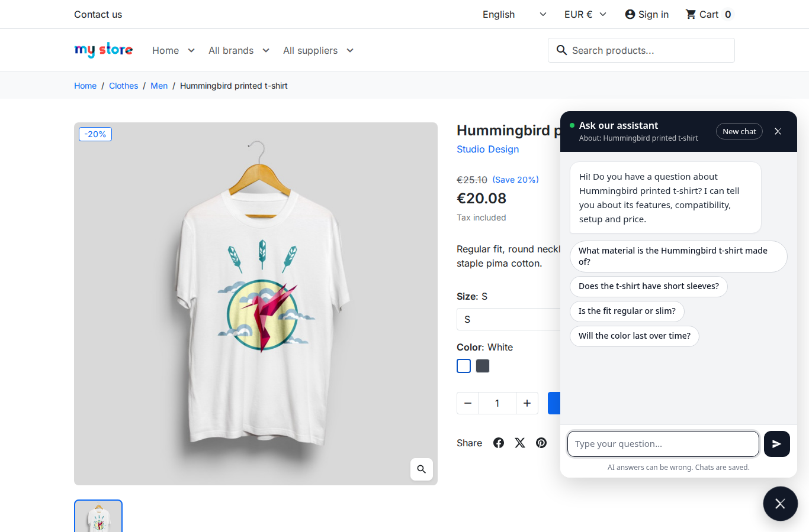
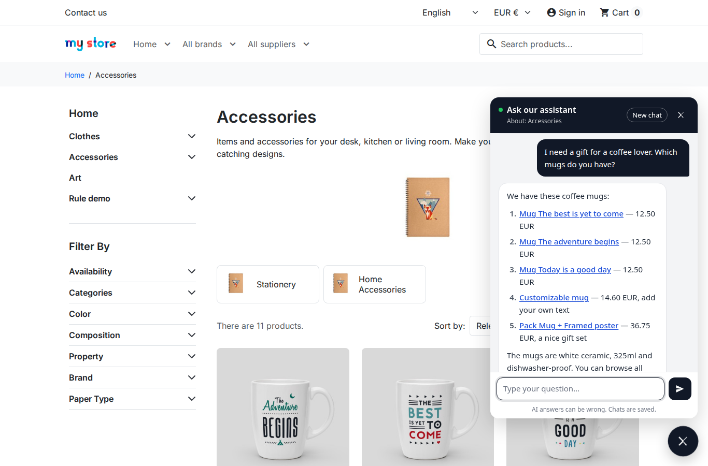
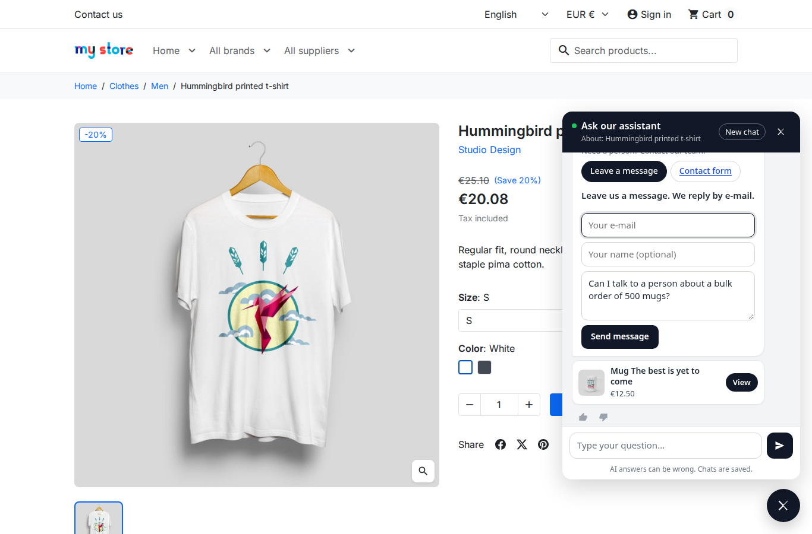
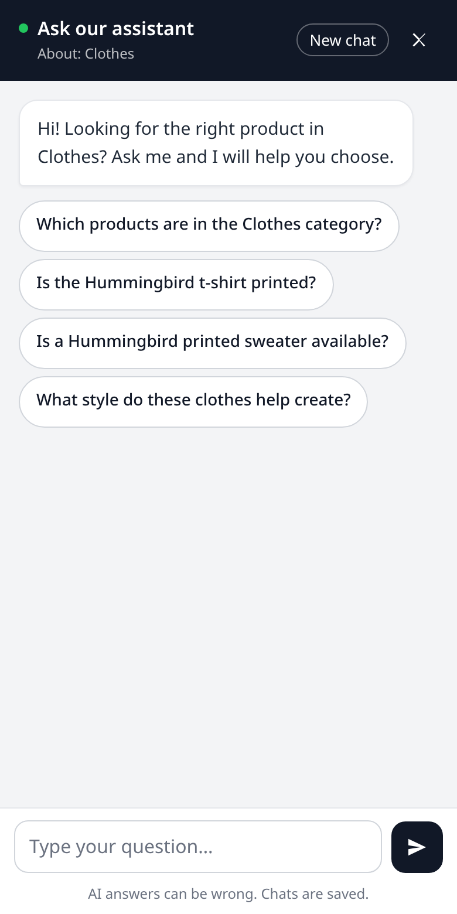

A round chat button sits at the bottom of every page. It waves until the visitor opens the chat for the first time.

On a product page the chat knows the product and suggests four questions about it.

Products the answer recommends, with links and prices.

When a person is needed: contact buttons and the message form.

On phones the chat fills the screen.